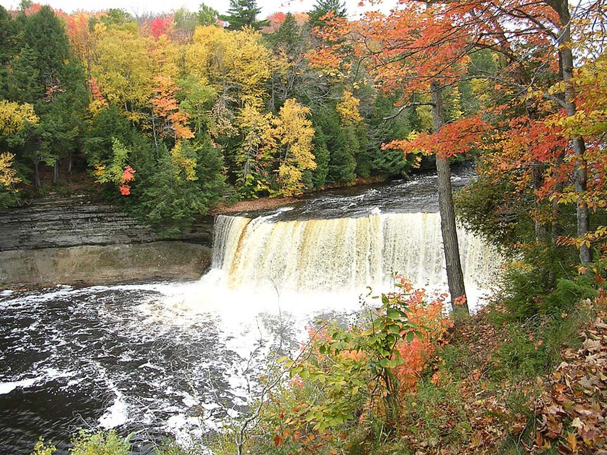
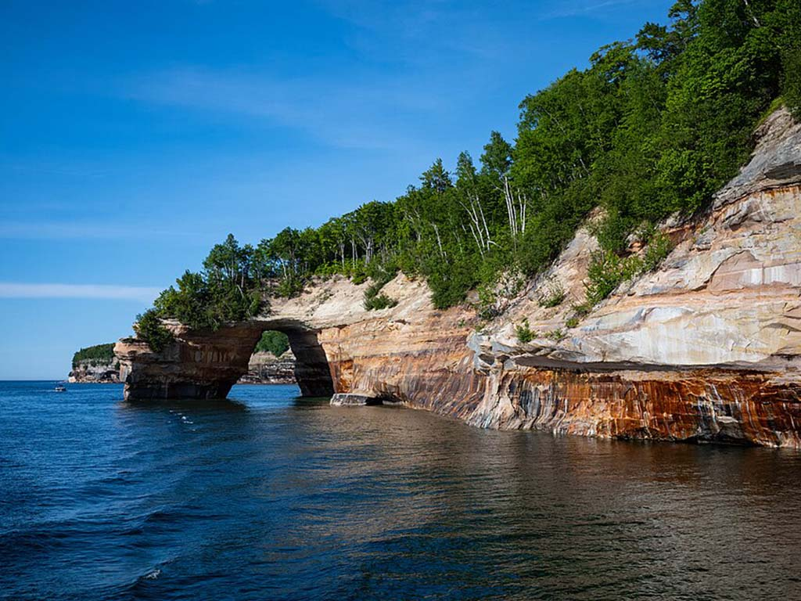
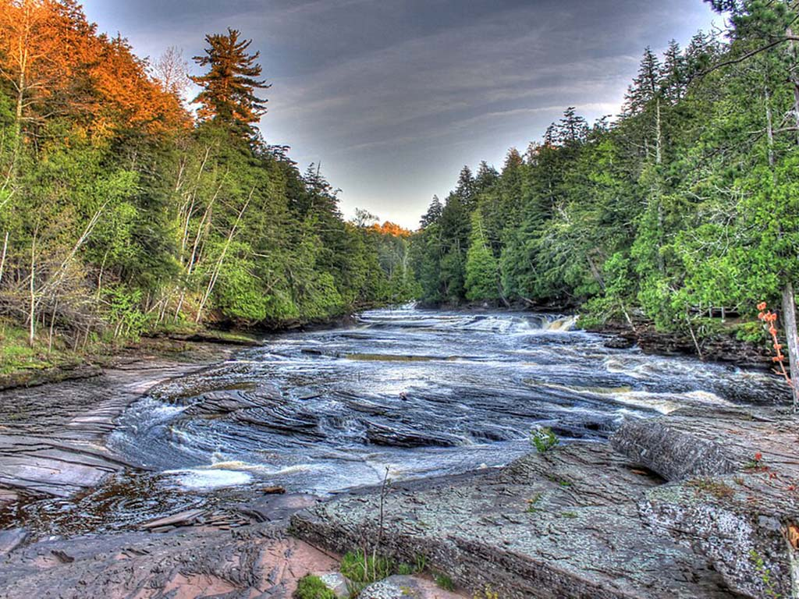
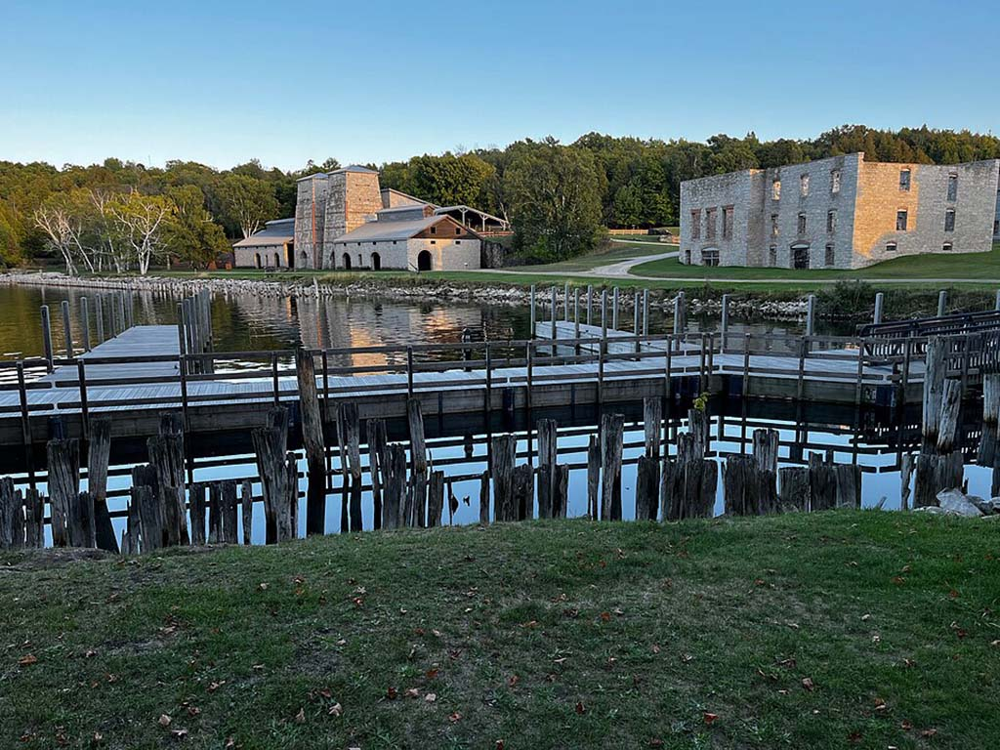
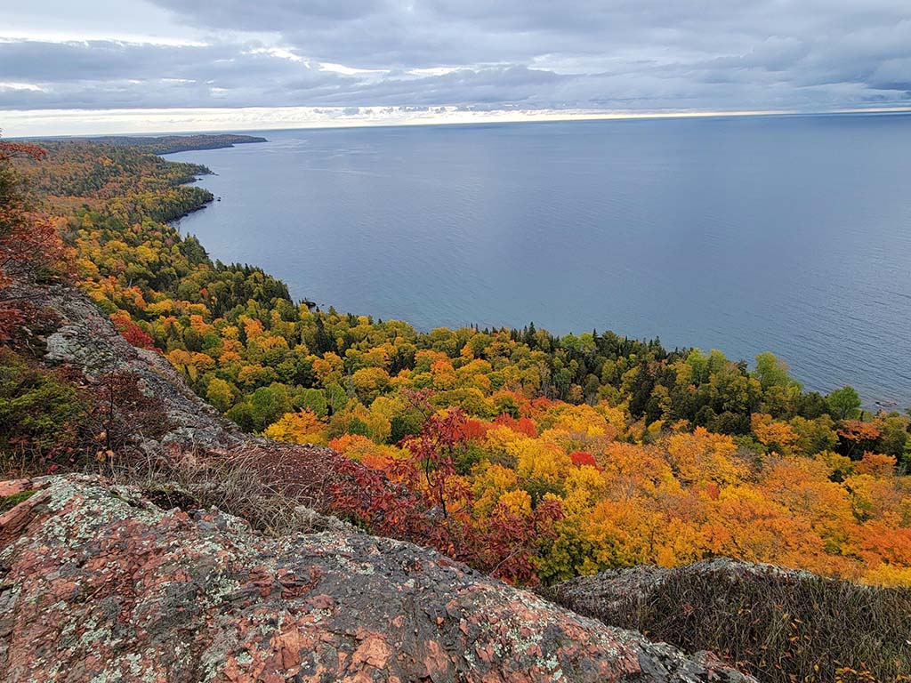
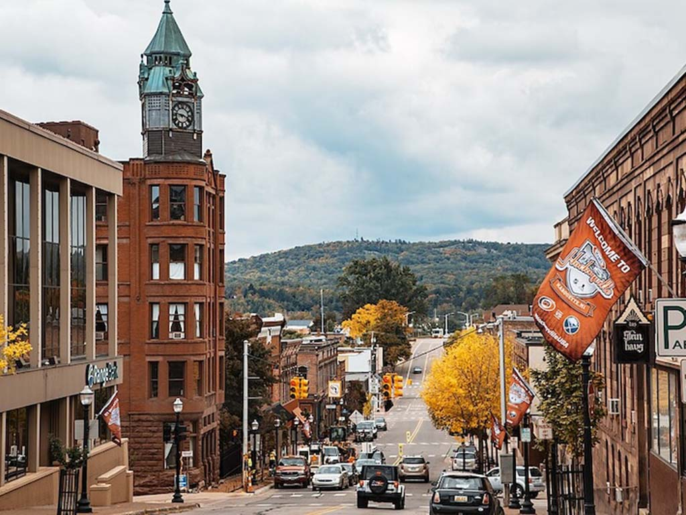
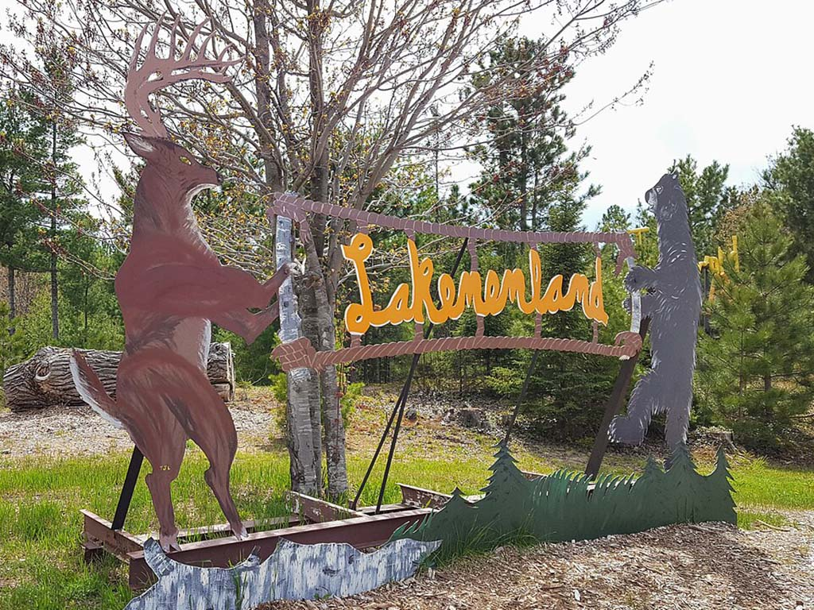
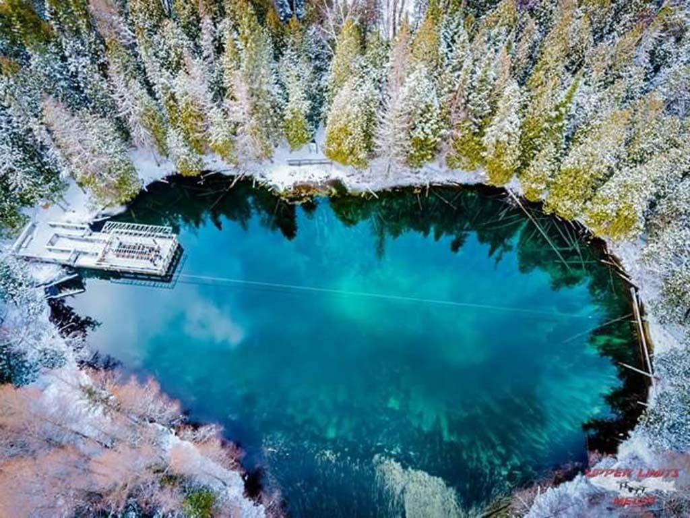
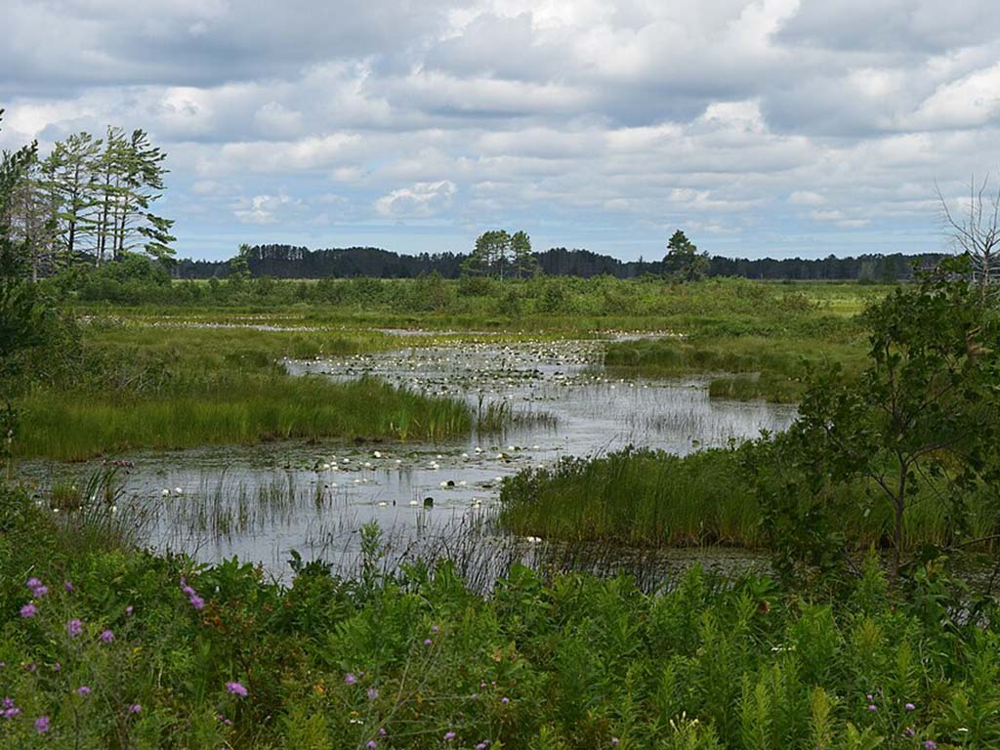

Places to visit
Michigan’s Upper Peninsula offers waterfalls, Lake Superior shorelines, historic sites, forests, and outdoor adventures.
-
Tahquamenon Falls

-
Pictured Rocks

-
Porcupine Mountains

-
Fayette Historic State Park

-
Keweenaw Peninsula

-
Marquette

-
Lakenenland Sculpture Park

-
Kitch-iti-kipi

-
Seney National Wildlife Refuge
